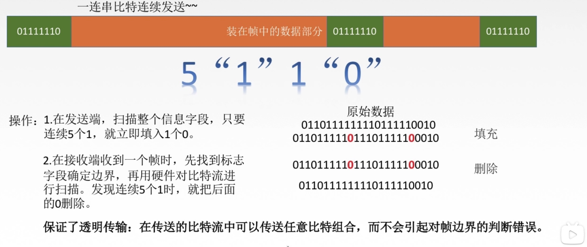
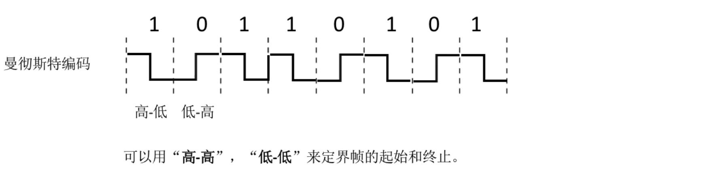

数据链路层
基本概念
节点：主机，路由器
链路：物理通道
数据链路：逻辑通道
帧：链路层的协议数据单元，封装网络层数据报
数据链路层负责通过一条链路从一个结点向另一个物理链路直接相连的相邻结点传送数据报。
功能
- 为网络层提供服务。
- 链路管理，即连接的建立，维持，释放（用于面向连接服务）
- 组帧
- 流量控制（限制发送方）
- 差错控制（帧错/位错）
封装成帧

帧同步：接收方应当能从接收到的二进制比特流中区分出帧的起始和终止。
透明传输：不管所传数据是什么样的比特组合，都应当能够在链路上传送。 --- 隐藏控制信息
组帧方法：
1. 字符计数法

缺点：容易出错
2. 字符（节）填充法


3. 零比特填充法

4. 违规编码法

总结
由于字节计数法中Count字段的脆弱性（其值若有差错将导致灾难性后果）及字符填充实现
上的复杂性和不兼容性，目前较普遍使用的帧同步法是比特填充法和违规编码法。
差错控制（比特错）
差错由来：噪声
主要解决局部性造成的差错

检错编码
- 奇偶校验码

- 只能检查出奇数个比特的错误，检错能力50%
- 循环冗余码CRC

- 能够实现无比特差错的传输，但这还不是可靠传输。（错误的帧会被丢弃）
纠错编码 --- 海明码
发现双比特错，纠正单比特错。动一发而牵全身
- 确定校验码位数r：海明不等式
- 确定校验码和数据的位置
- 求出校验码的值
- 检错并纠正
总结

流量控制与可靠传输机制
流量控制
较高的发送速度和较低的接收能力的不匹配，会造成传输出错。
- 数据链路层的流量控制是点对点的，而传输层的流量控制是端到端的。
- 数据链路层 流量控制手段：接收方收不下就不回复确认。
传输层 流量控制手段：接收端给发送端一个窗口公告。
方法
- 发送窗口与接收窗口在传输过程中是固定的。
- 发送方自动重传解决可靠传输
停止-等待协议
无差错情况
有差错情况


性能分析 --- 信道利用率低
信道利用率

后退N帧协议（GBN）
- 流水线技术
- 发送窗口多个，接收窗口只有一个
滑动窗口
- 发送窗口大小限制：若采用n个比特对帧编号，那么发送窗口的尺寸
W应满足：1<=W<= 2^n-1。因为发送窗口尺寸过大，就会使得接收方无法区别新帧和旧帧。
注意事项
- 发送方
- 确认序列号最大的，按序到达的帧。 --- 累计确认
- 接收方
按序接收并返回ACK，不按序无情丢弃。
性能分析 --- 批量重传
- 好：因连续发送数据帧而提高了信道利用率
- 坏：在重传时必须把原来已经正确传送的数据帧重传，是传送效率降低。
选择重传协议（SR）
- 设置单个确认，同时加大接收窗口，设置接收缓存，缓存乱序到达的帧。
- 一般发送窗口和接收窗口设置大小相等。
注意事项
- 发送方

- 不在累计确认了，需每个都收到ACK
- 接收方
来者不拒（窗口内到帧）
滑动窗口长度
Wmax = 2^(n-1) n表示序号比特位
信道划分介质访问控制
传输数据使用的两种链路
-
点对点链路：两个相邻节点通过一个链路相连，没有第三者。
应用：ppp协议，常用于广域网 -
广播式链路：所有主机共享通信介质。
应用：早期的总线以太网、无线局域网，常用于局域网
典型拓扑结构：总线型，星型 （逻辑总线型）
介质访问控制
采取一定的措施，使得两对节点之间的通信不会发生互相干扰的情况。
静态划分信道
信道划分介质访问控制：
将使用介质的每个设备与来自同一信道上的其它设备的通信隔离开，把时域和频域资源合理地事先分配给网络上的设备。
- 多路复用技术：
把多个信号组合在一条物理信道上进行传输，使得多个计算机或终端设备共享信道资源，提高信道利用率。 --- 实际就是把广播信道转变为点对点信道
1.FDM
2.TDM
改进的TDM: 统计时分复用STDM
3.WDM
波分多路复用就是光的频分多路复用，在一根光纤中传输多种不同波长（频率）的光信号，由于波长（频率）不同，所以各路光信号互不干扰，最后再用波长分解复用器将各路波长分解出来。
4.CDM
码分多址(CDMA)是CDM的一种方式
【Code Division Multiple Access】

动态分配信道
动态媒体接入/多点接入
- 特点：信道并非在用户通信时固定分配给用户。
随机访问介质访问控制
所有用户可随机发送信息，发送信息时占用全部带宽
一.ALOHA协议
纯ALOHA协议
思想：不监听信道，不按时间槽发送，随机重发。想发就发

时隙ALOHA协议
思想：把时间分成若干个相同的时间片，所有用户在时间片开始时刻同步接入网络信道，若发生冲突，则必须等到下一个时间片开始时刻再发送。控制想法就发的随意性
二.CSMA协议
载波监听多路访问协议【carrier sense multiple access】
思想： 发送帧之前，监听信道。
信道空闲：发送完整帧；信道忙：推迟发送
1-坚持CSMA
思想：空闲则直接传输，不必等待；忙则一直监听，直到空闲马上传输。
非坚持CSMA
思想：空闲则直接传输，不必等待；忙着等待一个随机的时间之后在进行监听。
p-坚持CSMA
思想：空闲则以p概率直接传输，不必等待；概率1-p等待到下一个时间槽再传输；忙则等待一个随机的时间之后在进行监听。
3种方法总结对比
三.CSMA/CD协议
以上3种方法发生冲突后还是要坚持把数据帧发送完，需得到确认帧才可判断是否冲突